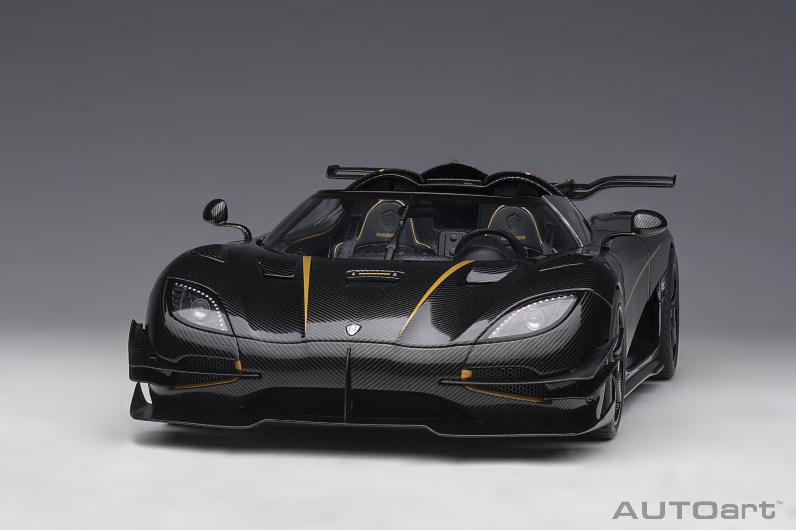
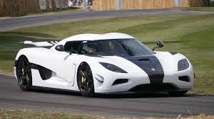
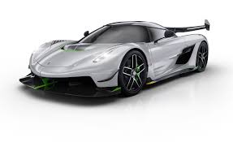
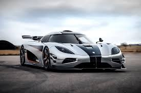
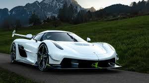
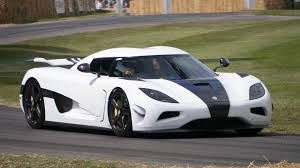
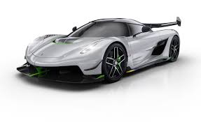
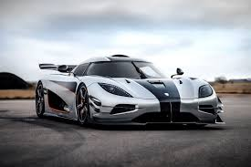
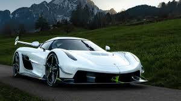

Стаття
 Koenigsegg Automotive AB — це шведська автомобільна компанія, заснована у 1994 році Крістіаном фон Кенігсеггом. Вона відома створенням ексклюзивних суперкарів з найсучаснішими технологіями, які поєднують в собі неймовірну швидкість, інноваційні рішення та розкішний дизайн. Головний офіс компанії розташований в Ангельгольмі, Швеція, і на її заводі виготовляються автомобілі в обмежених серіях, що робить їх надзвичайно рідкісними та дорогими. Koenigsegg став піонером у впровадженні передових матеріалів, таких як вуглецеве волокно, та втіленні інноваційних технологій у свої моделі. Історія Koenigsegg почалася з амбіційного бачення Крістіана фон Кенігсегга створити найкращий суперкар у світі. Перший прототип компанії, CC, було завершено у 2002 році, і з того часу Koenigsegg почав отримувати всесвітню славу завдяки своїм надшвидким та інноваційним моделям. Однією з визначних подій у історії компанії стало створення моделі Agera RS, яка у 2017 році побила світовий рекорд швидкості для серійних автомобілів, досягнувши 447 км/год. Koenigsegg також відомий своїми технологічними нововведеннями, такими як двигун без розподільного валу Freevalve, що дозволяє автомобілям досягати нових рівнів ефективності та потужності. Компанія продовжує рухатися вперед у своїй місії створення революційних транспортних засобів, які кидають виклик традиційним уявленням про те, на що здатний автомобіль. Koenigsegg One:1 **Koenigsegg One:1** — це один із найвидатніших і найреволюційніших автомобілів, створених компанією. Його було представлено у 2014 році, і він отримав назву на честь співвідношення маси до потужності, що становить 1:1 — тобто 1 кінська сила на 1 кілограм ваги автомобіля. Це співвідношення робить Koenigsegg One:1 першим у світі "мегакаром", оскільки потужність його двигуна досягає неймовірних 1360 кінських сил (1 мегават). Основні характеристики Koenigsegg One:1: 1. **Двигун**: 5,0-літровий V8 з подвійним турбонаддувом, який здатен генерувати 1360 к.с. і 1371 Нм крутного моменту. Завдяки цьому автомобіль має чудові динамічні показники. 2. **Маса**: Загальна маса автомобіля становить близько 1360 кг, що, у поєднанні з 1360 к.с., забезпечує унікальне співвідношення 1:1. Ця характеристика дозволяє автомобілю досягати надзвичайних результатів на трасі. 3. **Прискорення**: Koenigsegg One:1 може розганятися від 0 до 100 км/год менш ніж за 2,8 секунди, а від 0 до 400 км/год — за неймовірні 20 секунд. 4. **Максимальна швидкість**: Теоретично автомобіль здатен розвинути швидкість понад 440 км/год, що робить його одним із найшвидших автомобілів у світі. 5. **Аеродинаміка**: Однією з ключових інновацій Koenigsegg One:1 є його активна аеродинаміка, яка включає в себе регульовані задні крила та інші елементи, що автоматично налаштовуються для забезпечення оптимальної стійкості та притискної сили на високих швидкостях. 6. **Матеріали**: Для зменшення ваги Koenigsegg One:1 виготовляється з надлегкого вуглецевого волокна. Це не лише знижує загальну вагу, але й підвищує міцність автомобіля. 7. **Ексклюзивність**: Було виготовлено всього 7 екземплярів Koenigsegg One:1, включаючи прототип, що робить його надзвичайно рідкісним і бажаним серед колекціонерів та поціновувачів автомобільної інженерії. Технологічні інновації: Koenigsegg One:1 використовує багато передових технологій, таких як керамічні гальма з вуглецевого композиту, активні аеродинамічні елементи, повністю регульована підвіска та спеціальні шини, розроблені для високошвидкісних заїздів. Крім того, система контролю автомобіля дозволяє змінювати режими водіння, підлаштовуючи характеристики автомобіля до умов дороги або треку. Спадщина Koenigsegg One:1 Koenigsegg One:1 — це символ інженерної майстерності та інновацій, що демонструє межі можливого в автомобільній промисловості. Він не лише був інженерним досягненням, але й закріпив за Koenigsegg репутацію виробника найшвидших і найтехнологічніших автомобілів у світі. Ця модель стала поштовхом для подальших розробок компанії, таких як Koenigsegg Jesko, який продовжує традиції створення ультрашвидких гіперкарів. Koenigsegg One:1 залишається однією з найяскравіших моделей у світі суперкарів, яка підкорила серця багатьох автолюбителів своєю неймовірною потужністю, швидкістю та інноваційністю.
 






